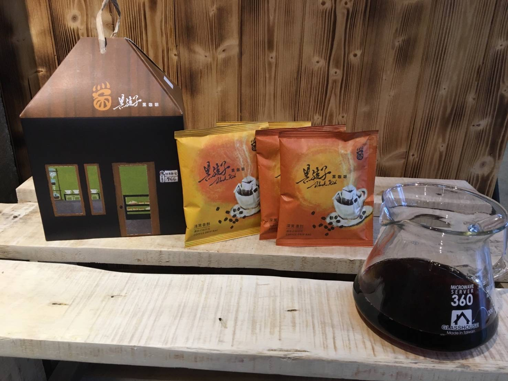
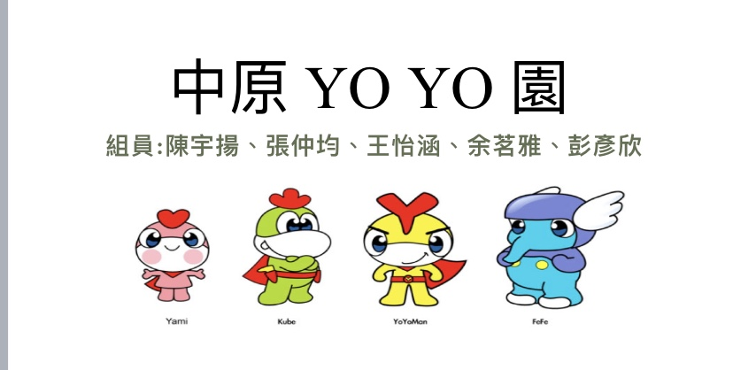
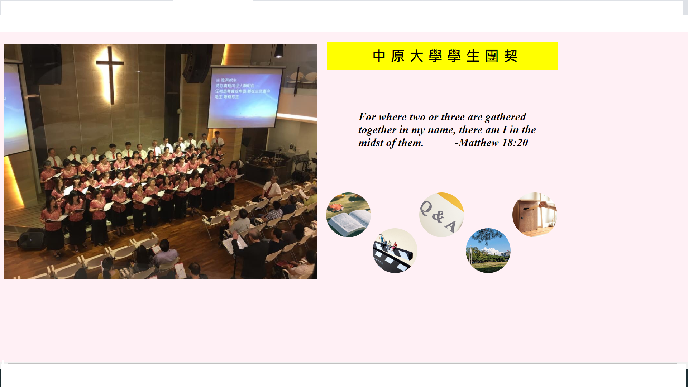

Hi~~~我叫余茗雅
目前就讀中原大學___資訊管理學系
座右銘:別在最能吃苦的年紀，選擇了安逸。
手機:0981780421
email: Lydia95061@gmail.com
我的網頁 

2006.09
國小
義興國小
2012.09
國中
平鎮國中
2015.09
高中
平鎮高中
2018.09
大學
中原大學
專業技能
HTML
CSS
C#
JAVA
JS
工作經驗
目前在王品集團旗下的品田牧場打工，已經10個月，
也從中學習到很多如何與人相處，如何避免顧客抱怨，
讓客人感受到我們的服務很好，自從做了服務業之後，
體會到服務業的辛酸，更能當一個有素養的顧客。
活動經驗
大二加入系學會，在活動股當股員，
在暑假的迎新宿營中，擔任隊輔，
雖然練習的過程中很累，卻是很棒的經驗
在大二上的時候活動股也辦了一些活動，
密室逃脫、資管之夜等等...。
課程經歷
大一上___企業概論課
嘿嘿!黑孩子黑咖啡
這門課學習到很多，我們的小組就像一個小型的公司，
一組有1000元的營運費，而我們這組是賣咖啡，
要設粉專在上面行銷我們的商品，而我的收入也會全數捐給他們，
這堂課不只學到以往沒有的經驗，也做公益，收穫非常大。

大一下___管理學
中原YO YO 園
這門課有點像是去服務學習，而我們的組員都非常喜歡小朋友，
所以我們選擇幼兒園，我們去那裏陪他們玩、
幫他們整理環境、幫忙老師減輕負擔
之後小朋友看到我們來都會熱情的歡迎我們，
看到他們開心也不自覺開心起來。

大二上___多媒體程式設計
期中專案___中園團契
這個作業算比較大型的作業，除了架設網站外，
還要深入了解我們要行銷的東西，而我們選擇中原團契是因為，
中原大學是一所基督教的學校，藉由團契更能讓大家知道，
中原大學的創校理念，也藉由這次活動參加團契，
再次感受到他們的溫暖。
點我點我